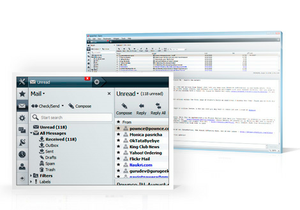
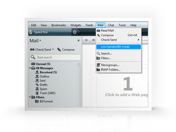
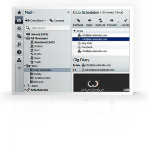

Archivierte Anleitung
Dieser Artikel wurde archiviert, da er - oder Teile daraus - nur noch unter einer älteren Ubuntu-Version nutzbar ist. Diese Anleitung wird vom Wiki-Team weder auf Richtigkeit überprüft noch anderweitig gepflegt. Zusätzlich wurde der Artikel für weitere Änderungen gesperrt.
Der E-Mail-Client von Archiv/Opera 12 ist sehr schlank gehalten. Opera orientiert sich an den Gesichtspunkten Schnelligkeit, Eleganz und Benutzerfreundlichkeit. Die empfangenen Nachrichten werden indiziert und nach Absender, Inhalt und Art der Nachricht einsortiert. Leider fehlt immer noch die Unterstützung von Verschlüsselungstechniken wie z.B. GnuPG.
Der E-Mail-Client ist nur bis zur Linux-Version 12.16 integriert. Neuere Linux-Versionen enthalten im Gegensatz zur Windows-Version keinen E-Mail-Client mehr.

Konto einrichten¶
Um ein Konto einzurichten, klickt man im Menü auf "Extras -> E-Mail und Chatkonten". Es startet ein Einrichtungsassistent, der durch die Einrichtung führt. In drei Schritten werden
Name, E-Mail-Adresse und optional Organisation/Firma
Benutzername und Passwort des E-Mail-Dienstes
Die Daten des Mailservers (POP oder IMAP, SMTP)
abgefragt. Sind alle Daten korrekt eingegeben bestätigt man mit einem Klick auf "fertig" und es werden alle noch auf dem Server vorhandenen E-Mails heruntergeladen. Der Modus für geringe Bandbreite kann bei der Einrichtung eines Kontos nicht ausgewählt werden. Dies ist erst im Nachhinein möglich (siehe Konten verwalten).
Hinweis:
Sollte das erste Abrufen mit einer Fehlermeldung enden, sollte man die Authentifizierung des POP-Servers auf Nur-Text umstellen und erneut versuchen.

Konten verwalten¶
Natürlich ist es möglich seine Konteneinstellungen zu einem späteren Zeitpunkt zu verändern. Um die Einstellung eines E-Mail-Kontos zu verändern, klickt man im Menü auf "Extras -> E-Mail- und Chat-Konten", wählt das Konto in der Übersicht aus und klickt auf "Bearbeiten...". Es öffnet sich ein Fenster mit folgenden Reitern:
Allgemein
Hier können verschiedene Angaben gemacht werden wie lokal mit dem Konto umgegangen wird.Server
Unter Server werden die vom Dienstanbieter bereitgestellten Daten eingetragen und geändert. Ein bereits auf POP/SMTP konfiguriertes Konto lässt sich nicht auf IMAP umstellen. Um IMAP nutzen zu können, muss das Konto erneut eingerichtet werden. Von einer parallelen Nutzung von POP und IMAP ist abzuraten, da es häufig zu Fehlern führt.Posteingang
In diesem Reiter wird festgelegt, wie Opera mit eintreffenden Nachrichten umgeht. Hier kann beispielsweise der Modus für geringe Bandbreite aktiviert werden.Postausgang
Hier wird das Verhalten beim Verfassen einer E-Mail festgelegt.
E-Mails verfassen¶
Um eine neue E-Mail zu verfassen, klickt man im E-Mail-Paneel auf die Schaltfläche "Verfassen". Es öffnet sich ein neuer Tab, in dem die E-Mail geschrieben werden kann. Die Bedienung ist weitgehend selbsterklärend und gleicht anderen Mailprogrammen. Die Einträge in der Kopfzeile wie Von, An, Cc usw. kann man über das Menü Anpassen (im Tab) anpassen.
E-Mails verwalten¶
Die E-Mails werden regelmäßig abgerufen. Den Intervall lässt sich im Reiter Postausgang der Einstellung des E-Mailkontos festlegen (siehe Konten verwalten).
Das E-Mail-Paneel¶
Das E-Mail-Paneel ist die Seitenleiste, mit der Übersicht der Threads für die E-Mails. Man öffnet es, indem man in der Tableiste auf die Schaltfläche "Paneele" und dann auf "E-Mail" klickt. Im oberen Bereich der Seitenleiste findet man die Schaltflächen Abrufen/Senden, Verfassen und ein Eingabefeld für die Suche. Diese Suche ist speziell für E-Mails. Die Eingabe eines Begriffes löst einen eigenen Suchvorgang aus und ist mit einem wiederverwendbaren Volltext-Filter zu vergleichen. Darunter befindet sich eine Übersicht der Threads.
Die Threads¶
Anstatt einer Ordnerstruktur mit der viele Mailprogramme arbeiten, arbeitet Opera mit Threads. Diese sind den Ordnern zwar recht ähnlich, unterscheiden sich allerdings im Handling. Mit Hilfe der Filter werden die E-Mails auch in den entsprechenden Threads bzw. deren Unterteilungen angezeigt. Die E-Mails befinden sich allerdings nach wie vor in dem entsprechenden E-Mail-Konto. Zu finden sind:
Ungelesen
Alle Nachrichten
Kategorien
Dateianhänge
Mailinglisten
Feeds
Die angelegten E-Mail-Konten
Die Nachrichtenansicht¶
Klickt man auf einen Thread oder dessen Unterpunkt, öffnet sich in einem neuen Tab die Nachrichtenansicht. Diese ist wie folgt unterteilt:
Symbolleiste
Eine Liste mit den entsprechenden Nachrichten
Anzeigefeld mit dem Text
Ein Eingabefeld für eine "Schnellantwort"
In der Liste mit Nachrichten findet man die üblichen Spalten wie z.B. Absender und Betreff. In der linken Spalte zeigt ein Symbol den Status der Nachricht an.
| Status | |
| Symbol | Bedeutung |
| ungelesen und noch nicht ausgewählte Nachrichten | |
| gesendete Nachricht | |
| beantwortete Nachricht | |
| weitergeleitete Nachricht | |
In der rechten Spalte kann die E-Mail einer Kategorie zugeordnet werden. 
Filter¶
Generell kann man mit Hilfe von Filtern seine E-Mails sortieren lassen. Der prominenteste Filter dürfte der Spamfilter sein.
Spamfilter¶
Mit der immer größeren Flut an Spam und anderen unerwünschten Nachrichten ist es sinnvoll, seine E-Mails von einem Filter vorsortieren zu lassen. Diese Aufgabe übernimmt der Spamfilter. Nach der Installation ist dieser auf die Filterintensität "Mittel" eingestellt. Der Spamfilter von Opera ist lernfähig. D.h. durch das Markieren von E-Mails als Spam/nicht Spam lernt der Filter automatisch hinzu und verbessert seine Qualität. Diese und sämtliche anderen Einstellungsmöglichkeiten findet man im Menü unter "E-Mail" -> "Filter" -> "Spam".
Eigene Filter¶
Es ist auch möglich mit Hilfe von eigenen Filtern eine klassische Baumstruktur nachzuempfinden und seine E-Mail im entsprechenden Thread anzeigen zu lassen. Dazu ruft man wie unter Spamfilter beschrieben die Filter-Einstellungen auf und legt einen neuen Filter an. Hier können auch die Filterregeln festgelegt werden. Mit jedem neuen Filter wird im E-Mail-Paneel ein neuer Thread erzeugt, in dem man die einsortierten Nachrichten findet.
Akustische Signale aktivieren¶
Um akustisch bei Eingang neuer E-Mails benachrichtigt werden zu können ist die Installation [1] eines Paketes notwendig.
alsa-oss
 mit apturl
mit apturl
Paketliste zum Kopieren:
sudo apt-get install alsa-oss
sudo aptitude install alsa-oss
Opera muss nun jedoch mit dem Befehl
aoss opera
gestartet werden. Möchte man Opera aus dem Menü starten muss noch die Startververknüpfung editiert werden. Daher entweder für alle Benutzer die Datei mit Root-Rechten unter /usr/share/applications/opera-browser.desktop oder die Datei nach ~/.local/share/applications/ lokal kopieren und dort bearbeiten. In dieser Datei muss der Eintrag
Exec=/usr/bin/opera %U
in
Exec=aoss /usr/bin/opera %U
editiert und gespeichert werden.
Tastaturkürzel¶
| Tastaturkürzel | ||||
| Taste(n) | Funktion | |||
| K | Ausgewählte Nachricht(en) als gelesen markieren | |||
| G | Ausgewählte Nachricht(en) als gelesen markieren und zur nächsten ungelesenen Nachricht wechseln | |||
| T | Ausgewählte Nachricht(en) als gelesen markieren und zur vorhergehenden ungelesenen Nachricht wechseln | |||
| ⇧ + K | Ausgewählte Nachricht(en) als ungelesen markieren | |||
| Strg + ⇧ + A | Alle Nachrichten des Filters als gelesen markieren | |||
| Entf | Ausgewählte Nachricht(en) in den Papierkorb verschieben | |||
| ⇧ + Entf | Ausgewählte Nachricht(en) endgültig löschen | |||
| R | Auf Nachricht antworten | |||
| ⇧ + R | Absender und allen Empfängern (An & Cc) der Nachricht antworten | |||
| F | E-Mail weiterleiten | |||
| D | E-Mail an neuen Empfänger erneut senden | |||
| Q | Eingabe im Schnellantwort-Feld beginnen | |||
| A | Absenderadresse in das Adressbuch übernehmen | |||
| ⇧ + S | Anhang speichern | |||
| Nachricht einer Kategorie zuordnen | ||||
| I | Zwischen den Ansichten "Liste", "Liste und Text" und "Text" wechseln | |||

- Erstellt mit Inyoka
-
 2004 – 2017 ubuntuusers.de • Einige Rechte vorbehalten
2004 – 2017 ubuntuusers.de • Einige Rechte vorbehalten
Lizenz • Kontakt • Datenschutz • Impressum • Serverstatus -
Serverhousing gespendet von